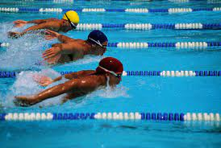
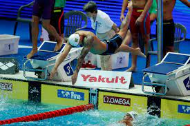
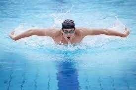

A natação é praticada desde muitos anos antes de Cristo, isso é revelado por pinturas rupestres e relatos que remontam uma antiga relação dos humanos com a atividade
A capacidade de nadar possibilitou avanços em questões relacionadas à sobrevivência e desenvolvimento humano. Possibilitou superar obstáculos (rios e lagos), adquirir alimentos (pesca) ou, mesmo, evitar afogamentos (enchentes ou quedas em rios).
  | Crawl | Costas | Peito | Borboleta (golfinho) |
|---|---|---|---|
| braçadas alternadas e movimento vertical, também alternado | Movimentos de braços e pernas alternado como no crawl, mas de costas para fundo da piscina | na posição de bruços, o atleta projeta o corpo para fora da piscina e realiza um movimento de braços e pernas em conjunto | Movimento das pernas ondulatório como o nado peito, mas com o movimento de braços simultâneos, projetados para fora da piscina. |
| Polo aquático |
| Nado sincronizado |
| Saltos ornamentais |
| Mergulho |